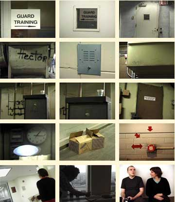

Skip to content
This is a static copy of the final website maintained by the
Roy Rosenzweig Center for History and New Media
.
Being an artist at the WTC
Kristin Lucas –
Encounters of the WTC-kind

Back to the story